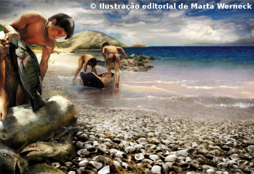
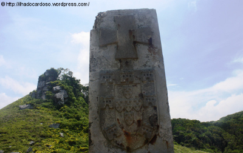
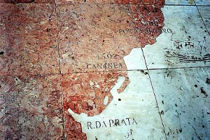
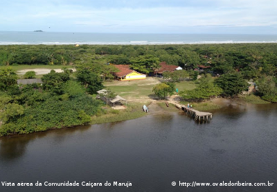
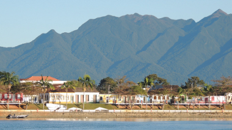

Os primeiros ocupantes da região estuarina de Cananéia, dos quais se tem notícia, foram do tipo chamado “homem dos sambaquis”. As datações de tais testemunhos mostram que esses habitantes estiveram na região em épocas entre 1.500 e 5.000 anos antes do presente (PETRONE, 1966 apud SÃO PAULO, 1998). Os “povos dos sambaquis” eram grupos humanos adaptados à planície costeira marinha e ao sistema lagunar, constituindo “uma civilização de canoeiros, conchófagos e ictiófagos” (AB’SABER; BESNARD, 1953 apud MENDONÇA, 2000). Antes da chegada dos europeus, o litoral, assim como o planalto, era povoado pelos guaianás e ao sul de Cananéia viviam os carijós (SÃO PAULO, 1998). Vale ressaltar, que as datações mais antigas que vêm sendo obtidas para os sambaquis de Cananéia não ultrapassa os 8.000 anos AP (CALLIPO, 2004).
Posteriormente, a ocupação da região do litoral sul do Estado de São Paulo data do início da colonização européia do Brasil (HANAZAKI, 2001), tanto que Cananéia é considerada como um marco do início da colonização portuguesa. Em 1530, a expedição comandada por Martim Afonso de Souza foi incumbida de explorar o litoral entre o Maranhão e o Rio da Prata, com a missão de expulsar os franceses, descobrir minas de ouro e prata, reconhecer toda a costa e devendo estabelecer núcleos de povoamento, tendo aportado na Ilha do Bom Abrigo, avistou o promontório de Itacuruça, na Ilha do Cardoso, onde foi colocado um marco de pedra com as quinas de Portugal (SÃO PAULO, 1998; ALMEIDA, 1946 apud MENDONÇA, 2000). Desse modo, pretendia-se fortalecer e criar novos postos de ocupação portuguesa, garantindo o que pertencia a Portugal no Tratado de Tordesilhas (MENDONÇA, 2000). Nessa região, encontraram o enigmático homem conhecido como Bacharel, Mestre Cosme Fernandes, o qual chefiava uma população de 200 mamelucos, juntamente com outro português, Francisco Chaves, e mais cinco castelhanos provindos de naufrágios ou degredados (SÃO PAULO, 1998; ALMEIDA, 1946 apud MENDONÇA, 2000).

A Ilha do Cardoso foi palco das primeiras investidas dos colonizadores portugueses que tinham a missão, no século XVI, de demarcar as fronteiras estabelecidas no Tratado de Tordesilhas (SÃO PAULO, 1998) e de iniciar o processo de colonização do litoral brasileiro. Em sua passagem pela ilha o navegador Martim Afonso desprezou o povoado de Cananéia para a elevação da primeira vila do Brasil, em parte por existir grande número de castelhanos, preferindo instalar-se em área eminentemente de Portugal (PRADO Jr., 1966 apud CAMARGO, 2002). Outro fator que pode ter levado o navegador a ignorá-la era a existência do potentado local, o Bacharel de Cananéia. Em relatos de cronistas do século XVI ele aparece como uma figura muito influente a qual todos tinham que recorrer se quisessem prosseguir com seus intuitos. Pode ter parecido a Martim Afonso que o confronto entre os interesses da metrópole, seus interesses e os do Bacharel não levaria a nada (CAMARGO, 2002).
Acredita-se que no dia 12 de agosto de 1531 foi fundada oficialmente a Vila de São João Batista de Cananéia, de onde partiu, em 1o de setembro, a primeira bandeira para o interior em busca de ouro e pedras preciosas, a qual foi dizimada pelos índios carijós (SCHADEN, 1954 apud SÃO PAULO, 1998). Nascia o que seria, talvez, a primeira cidade brasileira em povoação que se presume estivesse situada não na atual localização, mas na Ilha Comprida.
Desde então, a cidade passou e viveu diferentes ciclos econômicos e históricos dos quais podemos destacar o ciclo da mineração, da cultura do arroz e da construção naval durante os séculos XVII e XVII, o ciclo da agricultura no início do século XIX com um importante papel no cenário nacional da exportação de farinha, arroz e erva-mate e, finalmente, o ciclo da pesca e do extrativismo que começaram a se instalar a partir do século XX. Nesse período, existiam mais pessoas habitando a Ilha do Cardoso do que em Cananéia, devido à abundância de peixes e água potável, fertilidade do solo e, a riqueza de fauna e flora.
Por conta disso, a cidade é considerada como um importante marco do início da colonização portuguesa, sendo fundamental para o entendimento da história brasileira. Para se ter uma ideia, no Museu do Tombo, localizado em Lisboa (Portugal), existe uma laje em mármore (foto acima), com um mapa da costa brasileira que indicando como marcos do período das navegações as localidades de Porto Seguro (1500), Cananéia (1502) e Bacia do Prata (1514).

Atualmente, verificam-se diferentes fatores que possivelmente formam um novo ciclo, o do turismo. Mesmo com a transformação da Ilha do Cardoso em Unidade de Conservação Estadual no ano de 1962, a demanda turística foi um dos fatores que promoveram a ocupação e turismo desordenado em algumas comunidades, como por exemplo, as vilas do Marujá e Enseada da Baleia (SÃO PAULO, 1998). Naquela época, a ilha contava com cerca de 350 famílias que viviam basicamente da roça e da pesca sazonal. Com a criação do Parque Estadual da Ilha do Cardoso, muitas famílias que subsistiam da roça foram expulsas ou saíram da ilha a partir da proibição de se fazer roça ou porque venderam suas posses de terra a especuladores imobiliários. Os caiçaras locais que permaneceram na ilha passaram a viver exclusivamente da pesca e clandestinamente do extrativismo, caça e roça (SILVA, 2000).

Atualmente, o município guarda em seu conjunto arquitetônico as marcas desses diferentes períodos históricos, o qual teve o seu chamado “Centro Histórico” tombado pelo Conselho de Defesa do Patrimônio Histórico, Arqueológico, Artístico e Turístico (CONDEPHAAT) através do Processo n °
9.170/69, registrado no Livro do Tombo Histórico e publicado no Diário Oficial da União (12/12/1969).

De forma geral, o tombamento limita a expansão urbana e entorno do Setor Histórico, norteia e fiscaliza novas construções e reformas nas unidades de interesse de preservação. Além desse, o processo n° 23.395/85 tomba três sambaquis localizados na Fazenda Boa Vista, com área total do tombamento de 26,50 ha, sob a inscrição no Livro do Tombo Histórico Resolução SC 30 de 19/8/87, inscrição n° 10 (18/07/1988) no Livro do Tombo Arqueológico, Etnográfico e Paisagístico e publicado Diário Oficial do Estado (22/08/1987).
><> ><> ><>
CONSULTAS E REFERÊNCIAS BIBLIOGRÁFICAS:
BUENO, E. Náufragos, Traficantes e degredados: As primeiras expedições ao Brasil 1500-1531. Rio de Janeiro: Editora Objetiva, 1988. 200 p.
CALIPPO, F. R. 2004. Os Sambaquis submersos de Cananéia: um estudo de caso de arquelogia subaquática. Museu de Arqueologia e Etnologia da Universidade de São Paulo. Dissertação de Mestrado. 151 p.
CAMARGO, P.F.B. de. 2002. Arqueologia das Fortificações Oitocentistas da Planície Costeira Cananéia/ Iguape, SP. 2002. 210 p. Dissertação (Mestrado em Antropologia) – Museu de Arqueologia e Etnologia, Universidade de São Paulo, São Paulo, 2002.
HANAZAKI, N. Ecologia de caiçaras: uso de recursos e dieta. 2001. 193 p. Dissertação (Mestrado em Ecologia) – Instituto de Biologia, Universidade Estadual de Campinas, Campinas, 2001.
MAGALHÃES. N. W. Descubra o Lagamar. 2. ed. São Paulo: Ed. Terragraph, 2003. 157 p.
MENDONÇA, A. L. F. A Ilha do Cardoso – O Parque Estadual e os moradores. 2000. 163 p. Dissertação (Mestrado em Ciências Florestais) – Escola Superior de Agricultura “Luiz de Queiroz”, Universidade de São Paulo, Piracicaba, 2000.
SÃO PAULO, (ESTADO). Diário Oficial do Estado de São Paulo. Poder Executivo. Seção I. Número 60:108. São Paulo, 1998.
SILVA, V. C. F. Pesca e uso do espaço costeiro na Ilha do Cardoso – Litoral Sul de São Paulo. In: DIEGUES, A. C. S.; VIANA, M. V. (Ed.). Comunidades tradicionais e manejo dos recursos da mata Atlântica. São Paulo: nUPAUB-USP, 2000. p. 123-129.


{kind=link}
{kind=link}
{kind=link}
{kind=link}